Tutorial 1: Generating a virtual environment for the GenMR digital template
Author: Arnaud Mignan, Mignan Risk Analytics GmbH
Version: 1.1.2
Last Updated: 2026-03-31
License: AGPL-3
The digital template, first described in Mignan (2022) and used in the CAT Risk Modelling Sandbox (Mignan, 2024), is a microcosm simulation of the complex Earth system for catastrophe dynamics R&D, multi-risk prototyping in the Generic Multi-Risk (GenMR) framework, and catastrophe risk eduction. It is defined as a virtual environment populated by loss-generating events that interact with each other and with the environment. The virtual environment, to be built in this tutorial, is composed of environmental layers that consist of sets of variables \(\theta(x,y)\) defined in a spatial grid of coordinates \((x,y)\). Each layer may be altered by environmental objects located within the layer. The parsimonious complex Earth system finally consists of a stack of interacting environmental layers defined in the natural, technological and socio-economic systems. The loss-generating events that populate the virtual environment will be defined in the next tutorial, and their interactions potentially leading to compound catastrophes in a third and final tutorial.
The modelled environmental layers and associated objects as listed in Table 1 (see also Fig. 1). This tutorial provides a concise overview of these layers using a default parameterisation, with alternative scenarios to be introduced later in How-To Guides. The outputs generated here will serve as input for hazard and risk assessment in the subsequent tutorials.
EnvLayer_ID (Python classes). See Tab. A1 for the complete list of their attributes and properties.Environment |
ID |
Layer |
Main variable(s) |
Properties (examples) |
Object dependencies\(^*\) |
References |
Status‡ |
|---|---|---|---|---|---|---|---|
Natural |
|
Topography |
Elevation \(z\) |
Slope, aspect |
Geological & hydrological objects |
Mignan (2022) |
✓ |
Natural |
|
Atmosphere |
Temperature \(T\) |
Freezing level |
- |
N/A |
✓ |
Natural |
|
Soil |
Depth \(h\) |
Factor of safety |
- |
Mignan (2022) |
✓ |
Natural |
|
Natural land |
State \(S\) |
- |
- |
Mignan (2024) |
✓ |
Technological |
|
Urban (& rural) land |
State \(S\) |
Exposure value, population (day/night) |
Road network |
Mignan (2024) |
✓ |
Technological |
|
Energy infrastructures |
- |
Power grid |
- |
N/A |
✓ |
Socio-economic |
|
Socio-economic activity |
Economic output \(O\), grievance level \(G\) |
Power demand, public safety facilities |
- |
N/A |
ONGOING |
* Each layer additionally depends on the previous ones.
‡ Included in current version (✓), planned (✗).
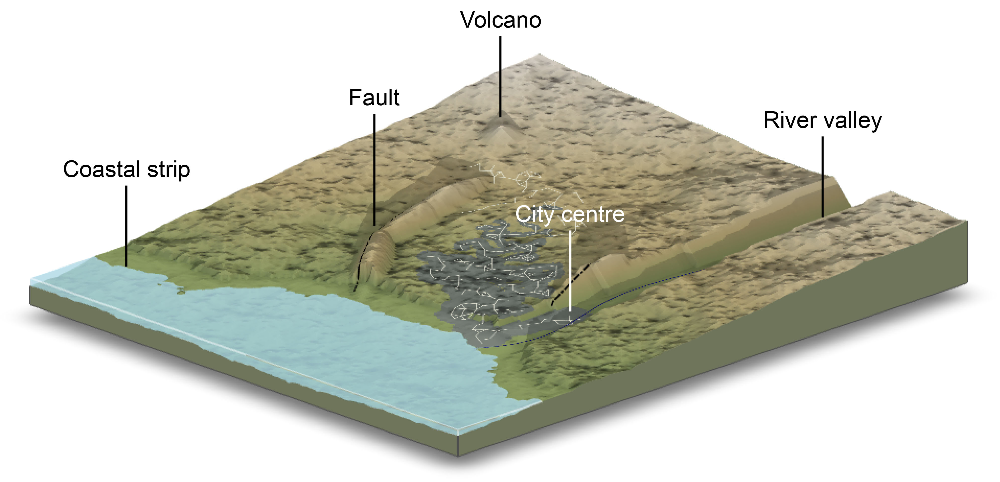
The environmental layers are generated as follows:
Topography (
topoLayer): Represented as the elevation \(z\) (m), the generic topography is defined by a west-dipping slope and a fractal dimension between 2 and 3. Environmental objects associated with peril sources modify the topography through intrusion and extrusion rules. The overall process, illustrated in Figure 2, combines methods from solid geometry and morphometry. Further details can be found in Mignan (2022). The main properties of the topography layer include terrain slope (\(^\circ\)) and aspect (\(^\circ\)).
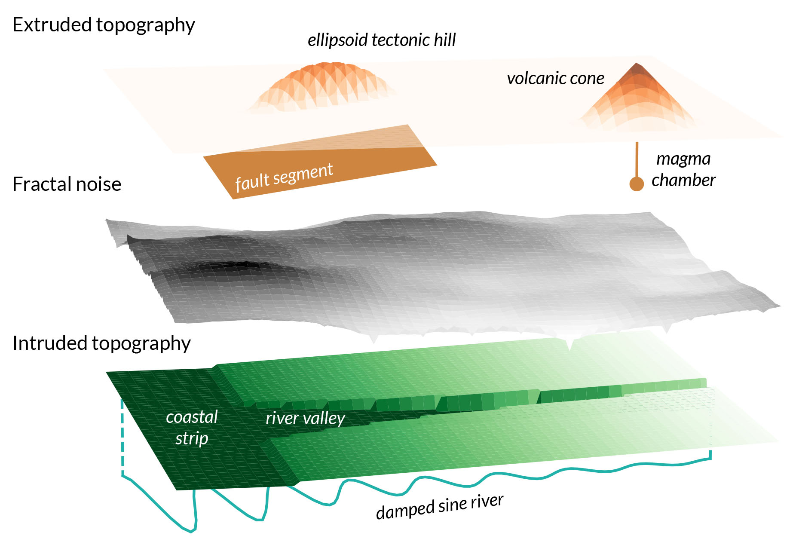
Atmosphere (
atmoLayer): Characterised by the mean near-surface air temperature \(T(z)\) function of the latitude and month of the year, based on the Energy Balance Climate Model (EBCM) of North et al. (1981). Properties include the freezing level \(z_{freeze}\) and the tropopause altitude \(z_{tropopause}\).Soil (
soilLayer): Characterised by the soil thickness, \(h\) (m), which is initially spatially uniform. It can later vary through mass movement processes (using the landslide cellular automaton (CA) introduced in the next tutorial) or by a simpler rule applied here: \(h = 0\) (i.e., scarp) if the soil is unstable at \((x,y)\). Other soil properties remain fixed parameters at this stage. A key property of the soil layer is the factor of safety, \(F_S\), which indicates whether the soil is stable, critical, or unstable.Natural land (
natLandLayer): Defined by the state \(S\), with \(S=-1\) for water, \(S=0\) for grassland, and \(S=1\) for forest. These classes represent the pre-urbanised land cover. All grid locations \((x,y)\) are considered forested except those above an elevation-dependent tree line (grassland), or below sea level (\(z = 0\)) and along river channels (water).Urban land (
urbLandLayer): Represents the built environment, where the state \(S\) overwrites the natural land classification: \(S = 2\) for housing, \(S = 3\) for industrial, and \(S = 4\) for commercial areas. The city is generated using a hybrid model that combines a simplified version of the SLEUTH city growth CA (Clarke et al., 1997; Candau, 2002), a road network CA (Koenig & Bauriedel, 2009), and a land-use transformation function (White et al., 1997) (Fig. 3; see Mignan (2024) for details). A key property of the urban-land layer is the asset value per pixel, which serves as the exposure component in the subsequent loss assessment tutorial.Rural land (optional): Converts eligible natural land cells to agricultural use (crops) according to spatial growth suitability criteria, with state \(S = 5\) representing wheat and \(S = 6\) representing maize.
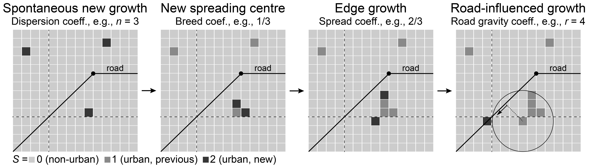
Energy infrastructure (
energyLayer): Consists of various localised critical infrastructures (CI), such as a refinery, a thermal plant, a hydropower dam and a wind farm. The three later CIs are the generator nodes of a power grid, defined as a regular mesh of load nodes covering the urban footprint.Socio-economic layer (
socioecoLayer) IN CONSTRUCTION: Consists of businesses (industrial and commercial) with economic output \(O\), city power demand, and population’s level of grievance \(G\). It also includes the location of three types of social safety facilities (hospitals, police and fire stations).
Section 1 details the simulation of the virtual natural environment of the digital template, Section 2 covers its technological environment, and Section 3 (currently under construction) addresses its socio-economic environment.
## libraries ##
import numpy as np
import pandas as pd
import copy
import matplotlib.pyplot as plt
from matplotlib.patches import Polygon as MplPolygon
#import warnings
#warnings.filterwarnings('ignore') # commented, try to remove all warnings
from GenMR import environment as GenMR_env
from GenMR import perils as GenMR_perils
from GenMR import utils as GenMR_utils
GenMR_utils.init_io() # make folders /io and /fig if do not exist
1. Natural environment generation
The generic natural environment is constrained by a predominant west–east orientation, with a coastline located at x0. This configuration ensures that any water mass, when present, is systematically positioned on the western side of the grid (Fig. 1). By convention, rivers flow exclusively from east to west. This directional constraint simplifies the natural environment generator while still allowing it to represent a wide range of regional configurations.
1.1. Grid definition
All environmental layers are defined on the raster grid RasterGrid(). The default grid parameterisation gridPar (a dictionary) specifies an active domain of 100 × 100 km, with a reference north-south coastline fixed at x0 = 0 (i.e., \(z(x_0) = 0\)). A larger computational domain, bounded by (xmin, xmax, ymin, ymax), is included to account for potential boundary effects. The active box is thus defined as (xmin+xbuffer, xmax-xbuffer, ymin+ybuffer, ymax-ybuffer). The spatial resolution is determined by the pixel width w=0.1 km. Lower-resolution grids may be defined later for specific environmental processes. The parameter lat_deg specifies the latitude that drives the climate of the region. A lon_deg parameter will be added in a future release when a longitude reference becomes necessary for additional environmental processes.
gridPar = {'w': .1,
'xmin': -20, 'x0': 0, 'xmax': 120, 'ymin': -10, 'ymax': 110,
'xbuffer': 20, 'ybuffer': 10,
'lat_deg': 30}
grid = GenMR_env.RasterGrid(gridPar)
1.2. Natural peril definition (for environmental objects)
Environmental layers can be influenced by specific environmental objects; this is notably the case for the first layer to be generated, the topography. In the context of a generic and parsimonious model, only essential objects are implemented. The environmental objects included here are restricted to those associated with the perils to be modelled in later stages.
Peril |
ID |
Source |
Environmental object |
References |
|---|---|---|---|---|
Earthquake |
|
Fault of coordinates ( |
Tectonic hill |
Mignan (2022) |
Fluvial flood |
|
River modelled as damped sine ( |
River valley |
Mignan (2022) |
Volcanic eruption |
|
Volcano of coordinates ( |
Conic volcanic edifice |
Mignan (2022) |
This configuration is parameterised using the dictionary srcPar. In this example, two faults, one river, and one volcano are defined. Additional perils will be introduced in the next tutorial. At this stage, only perils that can modify environmental layers are included.
srcPar = {
'perils': ['EQ', 'FF', 'VE'],
'EQ': {'object': 'fault',
'x': [[20, 40, 70], [40, 60]], # 2 faults (2 segments, 1 segment)
'y': [[60, 75, 80], [25, 30]],
'w_km': [5, 5], 'dip_deg': [45, 45],
'z_km': [2, 2], 'mec': ['R', 'R'], # only reverse R mechanism for now
'bin_km': 1}, # fault spatial resolution
'FF': {'object': 'river',
'riv_A_km': [10], 'riv_lbd': [.03], 'riv_ome': [.1], 'riv_y0': [20], # y = A*exp(-lbd*x)*cos(ome*x)+y0
'Q_m3/s': [100e3], 'A_km2': 100*100},
'VE': {'object': 'volcano', 'x': [90], 'y': [90]},
}
src = GenMR_perils.Src(srcPar, grid)
GenMR_perils.plot_src(src)
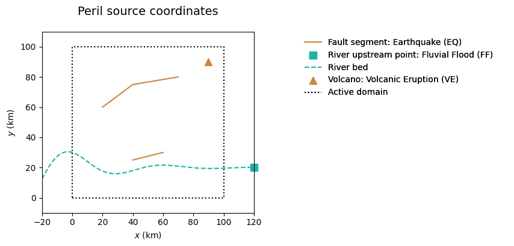
1.3. Generating the topography, atmosphere, soil, and natural land layers
Environmental layers are defined as instance of classes EnvLayer_* (with * the layer ID; see Table 1). For this version of the digital template, parsimonious natural environment models with a minimal number of input parameters are favored for illustration purposes (at the cost of some simplifications). A few models will be mentioned below without going into any detail. Visit the GenMR_SCOR reference manual for an in-depth description.
The topography layer (parameterized in topoPar) is defined with the elevation \(z(x,y)\) as its main variable. It is constructed at a lower granularity with pixel width grid.w * lores_f. The process takes several successive steps:
Background
bg: Plane tilted westward with slopebg_tan(phi)anchored at \(z = 0\) atx0;Tectonic hill(s)
th: Ellipsoid(s) with axes constrained by the 3D fault segment geometry (with centroid adjustable along the \(z\)-axis byth_Dz_km) extruding the topography;Volcano(s)
vo: Cone(s) centered on the volcano coordinates with widthvo_w_kmand heightvo_h_kmextruding the topography;Fractal
fr: Fractal noise (random seedfr_seed) with fractal dimensionfr_Dfand overall amplitude a fractionfr_etaof the background topography added to the topography. Uses the Diamond-square algorithm (Fournier et al., 1982). The coastline becomes irregular aroundx0at this step;River valley(s)
rv: Flat flood plain(s) tilted westward with sloperv_tan(phiWE)and N-S extend bound by the river exponential envelope intruding the topography (with anglerv_tan(phiNS)at the northern and southern boundaries). River channel(s) 2 N-S pixels wide for smooth flow and further intruded for normal channeled flow. Remnants of the original topography remain at a ratiorv_eta;Coastal strip
cs: Coastal strip of widthcs_w_kmand slopecs_tan(phi)(<bg_tan(phi)) intruding the topography on the eastern side of the coastline. Remnants of the original topography remain at a ratiocs_eta.
At the end of the process, the layer is upscaled back to the default pixel width grid.w. Except for the background topography, all other alterations are optional (th, vo, fr, rv, cs true or false).
The atmospheric layer (paramerized in atmoPar) is defined with the near-surface air temperature \(T(z(x,y))\) as its main variable. The reference near-surface temperature \(T_0(z=0)\) is calculated from the Energy Balance Climate Model (EBCM) of North et al. (1981), which is function of gridPar['lat_deg'] and the considered month (see Appendix B1 for details). The temperature at any altitude is controlled by the lapse rate (lapse_rate_degC/km). Additional parameters pertaining to atmospheric pressure (p0_kPa) and moisture content (vz_subs_asc, eta_rain) are incorporated for use in climatological peril modeling in the following tutorial.
The soil layer (parameterized in soilPar) is defined by two main variables, the soil thickness \(h(x,y)\), initialised at constant value h0_m, and the water column depth \(h_w(x,y)\), initialized at hw0_m. Water content dynamics is controlled by the selected regime (moisture_regime: normal or stressed) and other parameters (theta_fc, porosity). Other soil parameters include the effective cohesion Ceff_Pa, effective friction angle phieff_deg and soil density rho_kg/m3 used for landslide modelling in Tutorial 2. \(h(x,y)\) is then updated with the method defined in corr (for correction). For simplicity, locations where the factor of safety is lower than 1 get \(h=0\) (method remove_unstable). \(h_w(x,y)\) will be allowed to vary in the next tutorial (during rainstorms).
The natural land layer (parameterized in natLandPar) is defined by the state \(S(x,y)\), with \(S = -1\) (water) for \(z(x,y)<0\) (west of coastline) and at the coordinates of the river channel(s), \(S = 0\) (grassland) for \(z\) greater than ve_treeline_m, and \(S = 1\) (forest) otherwise (ve for vegetation). The land use state \(S\) will be further modified by urban and crop land classes in Section 2.
topoPar = {
'lores_f': 10, 'bg_tan(phi)': 3/100,
'th': True, 'th_Dz_km': -.5,
'vo': True, 'vo_w_km': [9], 'vo_h_km': [1],
'fr': True, 'fr_Df': 2.6, 'fr_eta': .5, 'fr_seed': 1,
'rv': True, 'rv_tan(phiWE)': [1/1000], 'rv_tan(phiNS)': [1/2], 'rv_eta': .1,
'cs': True, 'cs_w_km': 10, 'cs_tan(phi)': 1/1000, 'cs_eta': .1,
'plt_zmin_m': -500, 'plt_zmax_m': 4500,
'calc_d2coastline': False, # must be True if 'urbLandPar['crops'] = True' & to define industrialZones
'calc_d2river': False # must be True to define industrialZones
}
atmoPar = {
'lat_deg': gridPar['lat_deg'],
'lapse_rate_degC/km': 6.5, # rate at which temperature falls with altitude z
'p0_kPa': 101.3, # standard mean sea-level atmospheric pressure (International Standard Atmosphere)
'vz_subs_asc': [-1e-3, 1.], # large-scale vertical velocity (m/s), w < 0: subside (anticyclone)
# w > 0: ascent (cyclone), high in strong convection
'eta_rain': .5 # rain efficiency factor (NB: increase to .8 for organized systems?)
}
soilPar = {'h0_m': 10, # soil depth
'moisture_regime': 'normal', # 'normal' or 'stressed'
'hw0_m': 0, # soil moisture as water column (updated during soil water storage calculations)
'theta_fc': .3, # field_capacity: water content after excess-water has drained away
'porosity': .5,
'Ceff_Pa': 20e3, 'phieff_deg': 27, 'rho_kg/m3': 2650, # for landslides (LS)
'corr': 'remove_unstable'}
soilPar['hw_max_m'] = soilPar['porosity'] * soilPar['h0_m'] # maximum water content before waterlogging
soilPar['hw_fc_m'] = soilPar['theta_fc'] * soilPar['h0_m'] # stable maximum water content
if soilPar['moisture_regime'] == 'normal':
soilPar['hw0_m'] = .7 * soilPar['hw_fc_m']
elif soilPar['moisture_regime'] == 'stressed': # increased drought (Dr) likelihood
soilPar['hw0_m'] = .3 * soilPar['hw_fc_m']
# WARNING non 0 value fo hw0_m still to test...
natLandPar = {'ve_treeline_m': 2000}
We build all the natural environmental layers at once. Notice that each new layer builds upon the characteristics of the previous one(s):
grid = GenMR_env.RasterGrid(gridPar)
topoLayer = GenMR_env.EnvLayer_topo(src, topoPar)
atmoLayer = GenMR_env.EnvLayer_atmo(topoLayer, atmoPar)
soilLayer = GenMR_env.EnvLayer_soil(topoLayer, soilPar)
natLandLayer = GenMR_env.EnvLayer_natLand(soilLayer, natLandPar)
# peril sources and environmental layers saved in folder 'io/'
GenMR_utils.save_class2pickle(src, filename = 'src')
GenMR_utils.save_class2pickle(topoLayer, filename = 'envLayer_topo')
GenMR_utils.save_class2pickle(atmoLayer, filename = 'envLayer_atmo')
GenMR_utils.save_class2pickle(soilLayer, filename = 'envLayer_soil')
GenMR_utils.save_class2pickle(natLandLayer, filename = 'envLayer_natLand')
1.4. Environmental layer variable & properties plotting
In addition to the variables that define their state, environmental layers include built-in properties (Tabs. 1, A1). The function plot_EnvLayers() visualizes the primary variable(s) of each listed environmental layer along with selected key properties. The optional topo_bool = True adds hill shading in the map background of the digital template. The argument box = [xmin, xmax, ymin, ymax] can be provided to restrict the plot to a specified spatial subset of the domain. When the argument file_ext is defined as jpg, pdf or some other format accepted by matplotlib.pyplot.savefig(), a file is created in the folder 'figs/'):
#GenMR_env.plot_EnvLayers([topoLayer, atmoLayer, soilLayer, natLandLayer], file_ext = 'jpg')
GenMR_env.plot_EnvLayers([topoLayer, atmoLayer, soilLayer, natLandLayer], file_ext = 'jpg', topo_bool = True)
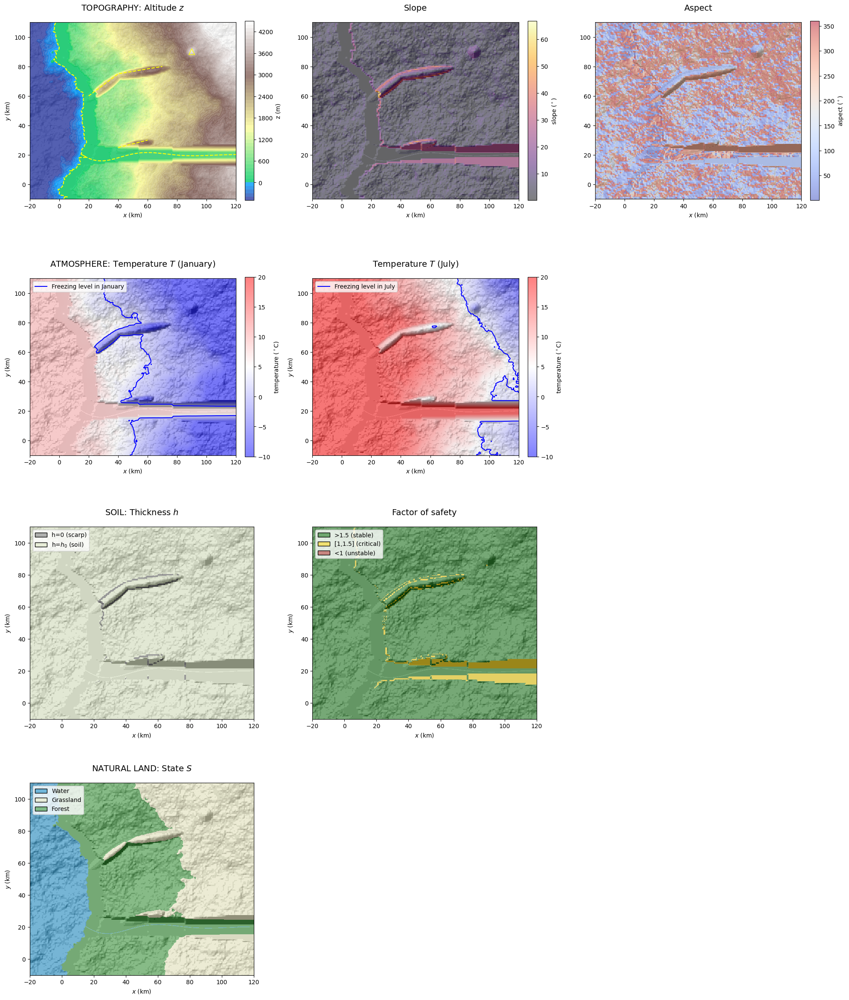
The function plot_EnvLayer_attr() plots individual variables and properties from environmental layers. If the elevation is given in the argument hillshading_z, hill shading is added in the background. An optional argument box = [xmin, xmax, ymin, ymax] can be provided to restrict the plot to a specified spatial subset of the domain. The list of possible attributes is given in Tab. A2.
GenMR_env.plot_EnvLayer_attr(topoLayer, 'aspect', file_ext = 'jpg')
GenMR_env.plot_EnvLayer_attr(soilLayer, 'FS')
GenMR_env.plot_EnvLayer_attr(soilLayer, 'h', hillshading_z = topoLayer.z, box = [10,70,20,80])
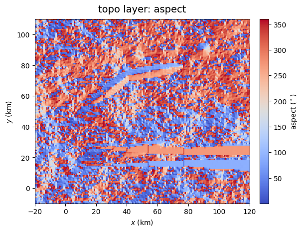
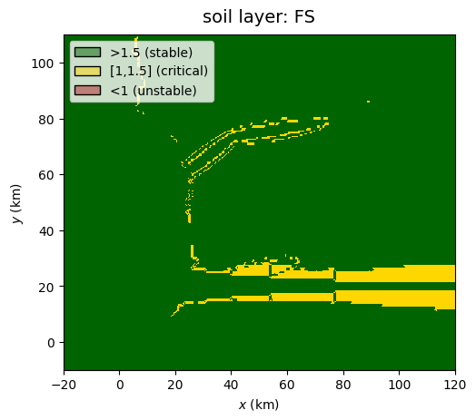
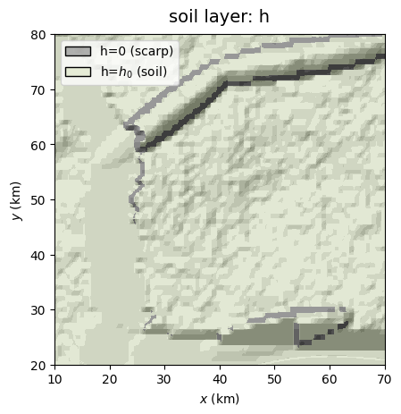
2. Technological environment generation
The technological system encompasses all human-made artifacts and engineered environments. This includes the built environment, critical infrastructure systems (such as transportation networks and energy generation and distribution), and agricultural production systems (i.e., crops) in rural areas. Goods and services delivered through businesses are classified within the socio-economic system (see Section 3).
2.1. Generating the urban land layer (incl. crops)
2.1.1. Generating the urban lan & intertwined road network object
The urban land layer (parameterized in urbLandPar) updates the natural land layer by urbanising grid pixels with new states \(S = 2\) for residential (RES), \(S = 3\) for industrial (IND) and \(S = 4\) for commercial (COM). The city nucleates at city_seed\((x,y)\) and grows for a period of city_yrs years by following the main rules of the SLEUTH cellular automaton (Clarke et al., 1997; Candau et al., 2002; Candau, 2002) parameterized by SLEUTH_*. Each year, the city develops constrained on the road network configuration (an environmental object in the digital template) that grows in parallel to the city, and which is also based on a cellular automaton (Koenig & Bauriedel, 2009) with parameters road_* in the dictionary urbLandPar. After each built per simulation-year, built grid pixels get their state \(S\) following the land-use transformation function of White et al. (1997:tab.1). The full description of this hybrid city-generator will be given in a future article (Mignan, in prep.; see Mignan, 2024:boxes 3.1-3.3 for a summary).
On the SLEUTH model: Note that the SLEUTH algorithm used for GenMR_SCOR was developed from the modelling instructions provided in Clarke et al. (1997) and Candau (2002) to gain knowledge on the general process of city growth. It is therefore likely that the code differs in several ways from the official SLEUTH urban growth model. Consider using sleuth-automation for any dedicated SLEUTH model use. The class GenMR.environment.EnvLayer_landUrb() includes a road network cellular automaton within the SLEUTH loop and adds the land use transformation function of White et al. (1997) instead of the SLEUTH Deltatron at the end of each year-run.
Depending on the value given to city_yrs, city generation can take several minutes or more (up to approximately 30 minutes for a 100-year build-out). To accelerate the process, users may bypass regeneration and directly load a previously saved urbLandLayer class instance by setting file_urbLandLayer = 'envLayer_urbLand.pkl' below, provided that the file already exists.
For economic loss assessment in the following tutorials, additional properties are defined for each building block at the resolution of grid.w. Four generic building materials (bldg_type) are considered: Wood (W) and Masonry (M) for residential, Reinforced Concrete (RC) for commercial, and Steel (S) for industry. The value of each building block (bldg_blockValue) is estimated as a function of GDP per capita (GDP_percapita_EUR) using a power-law relationship \(C = c_1\)GDP\(^{c_2}\) where \(C\) is the building construction cost (EUR/m\(^2\)) and GDP the per-capita GDP. Empirical parameters \(c_1\) and \(c_2\) are obtained from Huizinga et al. (2017:tab.3.25) for each occupancy type. The building block value bldg_blockValue is then approximated as \(C\) multiplied by the cell area (corrected by the factor ResComInd_Aratio) and the number of stories (bldg_Nstories).
Population counts (during day, pop_day and night, pop_night) are calculated according to existing statistics function of the occupancy type (RES, IND, COM).
2.1.2. Modelling crops
Two types of crops are modelled (wheat and maize), based on a temperature-based crop suitability index calculated from monthly near-surface air temperature and on other physical constraints defined by threshold crop_* in urbLandPar (see function crop_T_suitability()).
#file_urbLandLayer = '' # run the city growth model if '' provided
file_urbLandLayer = 'envLayer_urbLand.pkl' # if already exists
urbLandPar = {
'lores_f': 10, 'rdm_seed': 3, #
'city_seed': [40.5,20.5], # coordinates of city seed centre (put near river as historical centre)
'city_yr0': 1900, # year of settlement creation
'city_yrs': 100, # number of years for urban growth from seed
'SLEUTH_maxslope': 22, # cannot build above (°) - Candau & Rasmussen (2000:2)
'SLEUTH_disp': 10, # dispersion coefficient
'SLEUTH_breed': 50, # breed coefficient
'SLEUTH_spread': 20, # spread coefficient
'SLEUTH_slope': 90,
'SLEUTH_roadg': 4, # road gravity
'road_growth': 2, # number of road network nodes generated per year
'road_Rmax': 3, # max. radius in terms of number of perpendicular cells
'road_maxslope': 10, # cannot build above (degree)
'road_X': 6, #
# building char. #
'ResIndCom_yr_lowrise_end': [1970, 1970, 1970], # historic low-rise period end (started in city_yr0)
'ResIndCom_lowrise_max': [4, 2, 3], # max. number of stories in low-rise buildings
'ResIndCom_highrise_max': [8, 4, 6], # max. number of stories in high-rise buildings
'ResIndCom_mix_pr_high': [.2, .3, .2], # mixed regime probability of high-rise
'bldg_RES_wood2brick': .6, # ratio of number of RES. blocks made of wood relative to bricks (masonry)
'ResIndCom_Aratio_max': [.4, .3, .3], # fraction of the grid cell that is actually built
# max values for historic area
'ResIndCom_Aratio_alpha': .3, # minimum as 'ResIndCom_Aratio_alpha' * 'ResIndCom_Aratio_max'
'ResIndCom_Aratio_resol': 20., # temporal resolution of Aratio evolution (yr)
'GPD_percapita_EUR': 40e3, # GDP per capita (USD) used to estimate construction cost for res, com, ind.
# population char. #
'occ_ft2_pers': { # square feet per person - approx. values taken from HAZUS 6.1, tab. 5.32
'RES': {'day': 500, 'night': 350},
'COM': {'day': 300, 'night': 10000},
'IND': {'day': 500, 'night': 6000}
},
# crop char. #
'crops': True, # if True, crop classes modelled (wheat and maize hardcoded)
'crop_slope_max': 3., # maximum slope (°)
'crop_z_max': 1500., # maximum altitude (m)
'crop_h_min': .5, # minimum soil depth (m)
'crop_dcoast_min': 5., # minimum distance from coastline, i.e., saltwater intrusion limit (km)
'crop_Tindex_min': 0. # crop only generated above Tindex_min temperature suitability (0-1)
}
# consider for later: decrease 'ResIndCom_Aratio' with year (denser at historical centre, spread in suburb)
GenMR_utils.save_dict2json(urbLandPar, filename = 'par_urbLand')
if len(file_urbLandLayer) != 0:
urbLandLayer = GenMR_utils.load_pickle2class('/io/' + file_urbLandLayer)
print('... urbLandLayer class instance loaded')
else:
urbLandLayer = GenMR_env.EnvLayer_urbLand(natLandLayer, atmoLayer, urbLandPar)
urbLandLayer.generate()
# get cached industrialZones before saving
industrialZones = urbLandLayer.industrialZones
commercialZones = urbLandLayer.commercialZones
GenMR_utils.save_class2pickle(urbLandLayer, filename = 'envLayer_urbLand')
val = np.nansum(urbLandLayer.bldg_blockValue) * 1e-9
pop = np.nansum(urbLandLayer.pop_night) * 1e-6
print(f'Total exposure value: {val:.2f} bn EUR')
print(f'Total population: {pop:.2f} million people')
#Total exposure value: 976.37 bn EUR
#Total population: 23.12 million people
... urbLandLayer class instance loaded
Total exposure value: 976.37 bn EUR
Total population: 23.12 million people
2.2. Generating the energy infrastructure
The energy infrastructure layer (parameterized in energyPar) defines localised critical infrastructures (CI) as dataclass CriticalInfrastructure(). Considered CIs are a refinery and power plants (hydropower dam, thermal plant, and wind farm). The power plants (of power capacity_MW_cst) act as generator nodes in a power grid, consisting of a regular mesh of load nodes in the urban footprint.
Refinery: Situated in the \(n^{th}\) largest industrial harbor zone (
industrialZones = 'industrial harbor','refinery_loc' = 1for \(n=1\)). It is a potential source of industrial explosions in Tutorial 2.Power plants: Defined as generator nodes of the power grid.
Hydropower dam: placeholder for future CI add-on (see future v.1.2.2).
Thermal plant: Situated in the \(n^{th}\) largest industrial harbor zone (in second largest for \(n=2\), i.e.,
'thermalplant_loc' = 2).Wind farm: Situated in the optimal area for wind-based electricity production, according to
'windfarm_*parameters.
Power grid: Defined in 4 main steps (see also Appendix B2): 1 Load nodes: Regularly spaced on the urban footprint (\(S = {2,3,4}\), i.e., RES, IND, COM) according to
'powergrid_load_spacing_km'. 2 Urban grid: Load nodes are connected in a regular mesh. Depending on the urban spread distribution, some separate components (i.e., islands) can exist, which are connected to the main grid. 3 Generator-substation connections: Generator nodes (fixed as the 3 power plants) are connected to the nearest industrial zone, which centroid becomes a substation node. Transmission lines follow an optimised routing strategy, defined inpowergrid_route_*parameters. 4 Fully connected network (powergrid): the substations are connected to the two nearest load nodes.
energyPar = {
# 'rdm_seed': None,
'hydrodam_coords': (100,20), # placeholder until hydropower dam model add-on implemented (future v.1.2.2)
'refinery_loc': 1, # harbor zone loc. ranked by size, refinery in largest zone
'thermalplant_loc': 2, # harbor zone loc. ranked by size, thermal plant in 2nd largest
'windfarm_zminmax_m': [2000, 2500], # locate windfarm on ridge(s)
'windfarm_xmax_km': 40, # locate windfarm near coastline
'windfarm_maxslope_deg': 15., # construction impossible if too steep
'windfarm_centroid_shift': (0,-1.), # if needed to optimise routing on specific ridge side
'windfarm_turbine_capacity_MW': 5.,
'powergrid_power_perGnode_GW': 2.5, # same for all generator nodes
'powergrid_load_spacing_km': 5, # spacing of regular mesh of load nodes
'powergrid_redundanciesGS': 3, # number of lines connecting each generator to substation
'powergrid_redundanciesSL': 2, # number of lines connecting each substation to main grid
'powergrid_route_costSlope': 1, # cost times slope_degrees
'powergrid_route_costWater': 100, # cost of crossing water cell
'powergrid_route_towerSpacing_km': 1. # distance between transmission line towers
}
energyPar['windfarm_turbine_n'] = \
int(energyPar['powergrid_power_perGnode_GW']*1e3/energyPar['windfarm_turbine_capacity_MW'])
energyLayer = GenMR_env.EnvLayer_energy(urbLandLayer, energyPar)
#GenMR_utils.save_class2pickle(energyLayer, filename = 'envLayer_energy')
powergrid, node_names, node_coords, node_supply = energyLayer.powergrid
node_names_list = [node_names[i] for i in range(len(node_names))]
indL = [i for i, name in node_names.items() if name.startswith('L')]
print(f"Total power generation = {energyPar['powergrid_power_perGnode_GW'] * 3} GW")
Total power generation = 7.5 GW
2.3. Environmental layer properties
Use the functions plot_EnvLayer() and plot_EnvLayer_attr() to display environmental layers and specific properties. Several examples are given below:
GenMR_env.plot_EnvLayers([urbLandLayer, energyLayer], file_ext = 'jpg', box = [10,80,15,70], topo_bool = True)
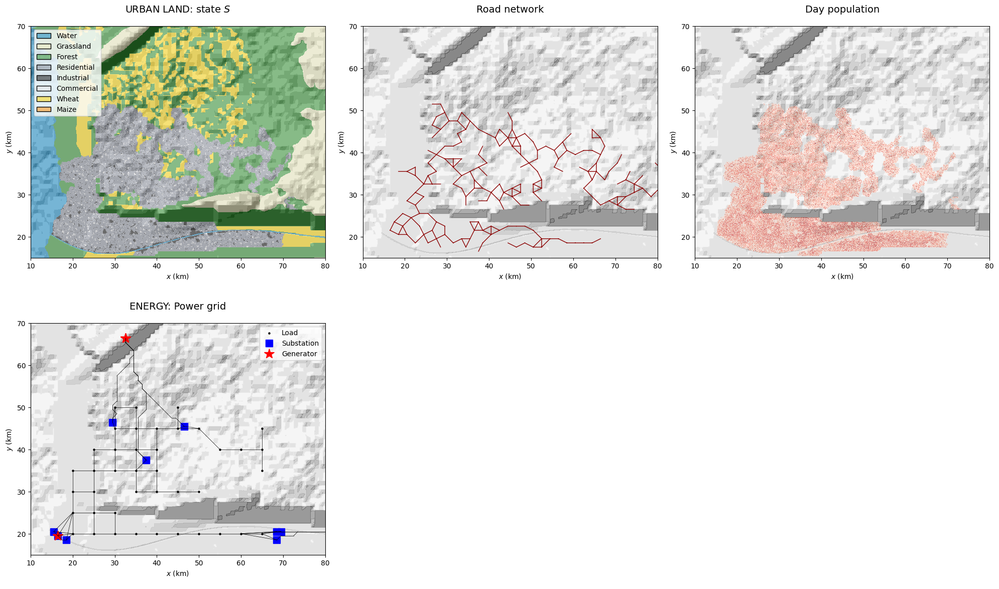
GenMR_env.plot_EnvLayer_attr(urbLandLayer, 'bldg_blockValue', box = [15,70,15,50])
GenMR_env.plot_EnvLayer_attr(urbLandLayer, 'industrialZones', hillshading_z = topoLayer.z, box = [15,70,15,50])
#GenMR_env.plot_EnvLayer_attr(energyLayer, 'powergrid')
GenMR_env.plot_EnvLayer_attr(energyLayer, 'powergrid_wID', file_ext = 'pdf', box = [10,105,15,70])
# NB: pdf option to plot highres node IDs
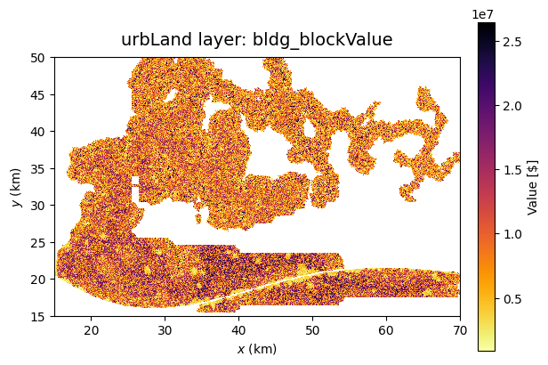
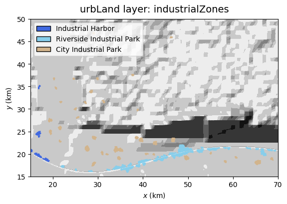
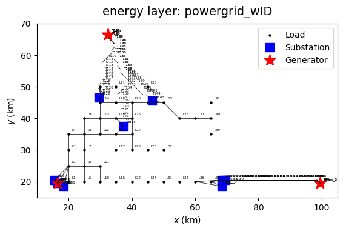
# tmp - show refinery and thermal plant locations on map
fig, ax = plt.subplots(1,1, figsize=(20,10))
coast_x, coast_y = topoLayer.coastline_coord
riv_x, riv_y, _, _ = topoLayer.river_coord
ax.contourf(grid.xx, grid.yy, GenMR_env.ls.hillshade(topoLayer.z, vert_exag=.1), cmap='gray')
ax.plot(coast_x, coast_y, color = 'yellow', linestyle = 'dashed')
ax.plot(riv_x, riv_y, color = 'yellow', linestyle = 'dashed')
for poly in urbLandLayer.industrialZones:
patch = MplPolygon(
poly['polygon'].exterior.coords,
closed=True,
facecolor = GenMR_utils.col_industrialZone.get(poly['zone_type'], 'gray'),
edgecolor='black',
alpha=1.,
linewidth=.5
)
ax.add_patch(patch)
refinery = energyLayer.CI_refinery
if refinery is None:
print('No refinery detected.')
else:
cx, cy = refinery.centroid
ax.scatter(cx, cy, color = 'darkorange', marker = '+', s = 400, linewidth = 4, label = 'Refinery (CI)')
thermalplant = energyLayer.CI_thermalplant
if thermalplant is None:
print('No refinery detected.')
else:
cx, cy = thermalplant.centroid
ax.scatter(cx, cy, color = 'brown', marker = '+', s = 400, linewidth = 4, label = 'Thermal plant (CI)')
scatter_handles, scatter_labels = ax.get_legend_handles_labels()
all_handles = GenMR_env.lgd_industrialZone + scatter_handles
all_labels = [h.get_label() for h in GenMR_env.lgd_industrialZone] + scatter_labels
ax.legend(all_handles, all_labels, loc='upper left')
ax.set_xlabel('$x$ (km)')
ax.set_ylabel('$y$ (km)')
ax.set_xlim(10,50)
ax.set_ylim(10,40)
ax.set_title('Industrial zones & critical infrastructures', size = 14, pad = 20)
ax.set_aspect(1);
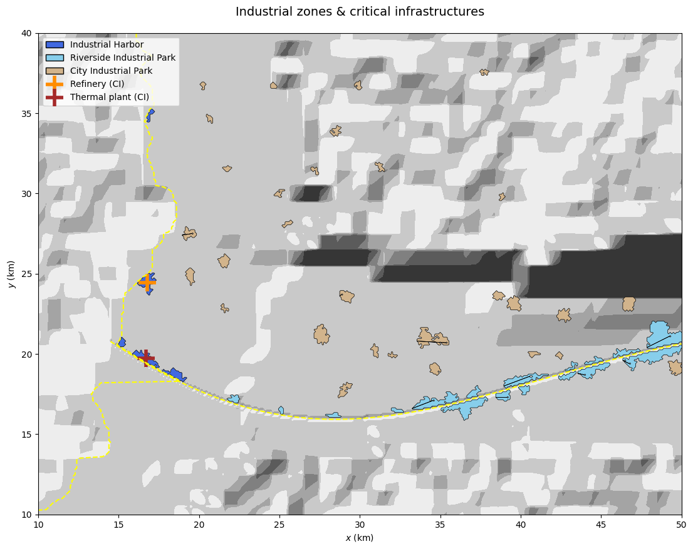
3. Socio-economic environment generation
3.1. Generating the socio-economic layer
IN CONSTRUCTION
The socio-economic layer (parameterized in socioecoPar) defines both economic and social aspects of the simulated urban area:
Public safety facilities: Hospitals, police stations, and fire stations are spatially distributed across commercial areas based on population thresholds (
pop_per*), providing a simplified representation of emergency service coverage.Power demand: Electricity demand is estimated at the mesh-cell level based on land use (residential, industrial, commercial -
W_per_*), population distribution (urbLandLayer.pop_day/pop_night), and building characteristics (floor area). Demand is computed separately for day and night conditions and aggregated to the nearest power grid load nodes (defined inenergyLayer.powergrid).Business output: TO DO
Grievance level: TO DO
Given the power needs of the socio-economic environmental layer, the energy layer must be updated:
Power grid dynamics: Local demand is mapped onto the power grid, and power is redistributed across the network using a DC flow approximation, yielding node potentials and line flows consistent with supply–demand balance.
socioecoPar = {
'rdm_seed': 1,
# eco
'P_W_per_pers_RES': [150, 300], # day / night IEA "Energy in Buildings" 2023, Eurostat household energy statistics
'P_W_per_m2_IND': [140, 10], # day / night
'P_W_per_m2_COM': [40, 5], # day / night
'GDP_fraction_IND': .4, # fraction of region's GDP in IND blocks
'GDP_fraction_COM': .6, # fraction of region's GDP in COM blocks
# 'GDP_fraction_IND'+'GDP_fraction_COM' ≤ 1, remainder=other
# socio
'pop_perHospital': 200000, # note for later: regime could be defined 'normal' vs 'underfunded'
'pop_perPoliceStation': 50000,
'pop_perFireStation': 100000,
# add n_wealth sectors for RES as voronoi cells, estimated from building yr, count com vs ind, forest+water
}
socioecoLayer = GenMR_env.EnvLayer_socioeco(socioecoPar, grid, urbLandLayer, energyLayer)
socioecoLayer.build()
print('Economic output (Bn EUR/yr):', np.round(np.nansum(socioecoLayer.O) * 1e-9, decimals = 2))
print('Economic output for IND (EUR/m2/yr):', np.round(socioecoLayer.econ_output_IND_m2_yr))
print('Economic output for COM (EUR/m2/yr):', np.round(socioecoLayer.econ_output_COM_m2_yr))
energyLayer.solve_power_flow(socioecoLayer.node_demand_day, socioecoLayer.node_demand_night, socioecoLayer.load_ID)
GenMR_utils.save_class2pickle(socioecoLayer, filename = 'envLayer_socioeco')
GenMR_utils.save_class2pickle(energyLayer, filename = 'envLayer_energy') # previous file overwritten
# WARNING: if there is a power supply deficit (instead of surplus) given socioecoPar,
# increase energyPar['powergrid_power_perGnode_GW'] or reduce socioecoPar['W_*'].
Economic output (Bn EUR/yr): 470.38
Economic output for IND (EUR/m2/yr): 7554.0
Economic output for COM (EUR/m2/yr): 11331.0
Power surplus (day): 161.38 MW
Power surplus (night): 227.65 MW
3.2. Environmental layer properties
Use the functions plot_EnvLayer() and plot_EnvLayer_attr() to display environmental layers and specific properties. Several examples are given below:
GenMR_env.plot_EnvLayers([urbLandLayer, energyLayer, socioecoLayer], file_ext = 'jpg', box = [15,70,15,60],
topo_bool = True)
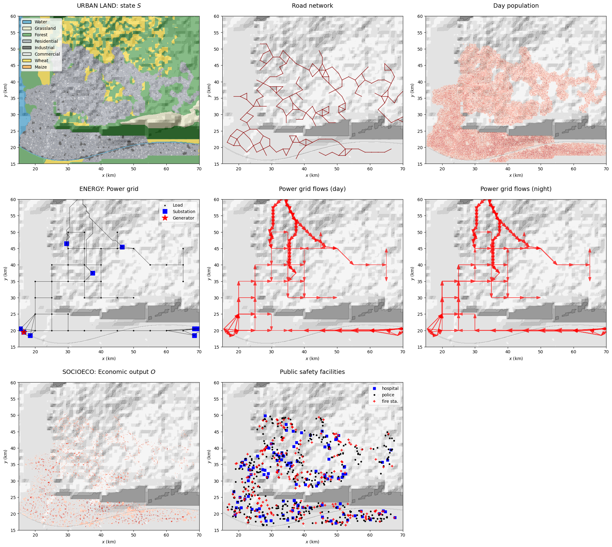
#GenMR_env.plot_EnvLayer_attr(energyLayer, 'powerflows_day', box = [15,100,15,70])
#GenMR_env.plot_EnvLayer_attr(energyLayer, 'powerflows_night', box = [15,100,15,70])
GenMR_env.plot_EnvLayer_attr(socioecoLayer, 'O', box = [15,70,15,55])
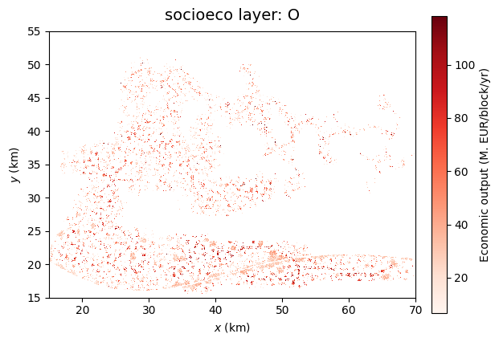
References
Candau JT (2002), Temporal calibration sensitivity of the SLEUTH urban growth model. Master Thesis, University of California Santa Barbara, 130 pp.
Clarke KC, Hoppen S, Gaydos L (1997), A self-modifying cellular automaton model of historical urbanization in the San Francisco Bay area. Environment and Planning B: Planning and Design, 24, 247-261.
Fournier A, Fussell D, Carpenter L (1982), Computer Rendering of Stochastic Models. Communications of the ACM, 25, 371–384.
Huizinga J, de Moel H, Szewczyk W (2017), Global Flood Depth-Damage Functions. Methodology and the Database with Guidelines. JRC Technical Reports. EUR 28552 EN
Koenig R, Bauriedel C (2009), Generating settlement structures: a method for urban planning and analysis supported by cellular automata. Environment and Planning B: Planning and Design, 36, 602-624.
Mignan A (2022), A Digital Template for the Generic Multi-Risk (GenMR) Framework: A Virtual Natural Environment. International Journal of Environmental Research and Public Health, 19 (23), 16097, doi: 10.3390/ijerph192316097
Mignan A (2024), Introduction to Catastrophe Risk Modelling - A Physics-based Approach. Cambridge University Press, doi: 10.1017/9781009437370
Morgan-Wall T (2022), rayshader: Create Maps and Visualize Data in 2D and 3D. https://www.rayshader.com.
North et al. (1981), Energy Balance Climate Models. Rev. Geophys. Space Phys. 19(1), 91-121.
White R, Engelen G, Uljee I (1997), The use of constrained cellular automata for high-resolution modelling of urban land-use dynamics. Environment and Planning B: Planning and Design, 24, 323-343.
Appendix
A. Variables & properties of environmental layers
A.1. Variable and property lists
EnvLayer_ID.Layer class ID |
Variable\(^*\) or property |
ID |
Description |
|---|---|---|---|
|
Elevation\(^*\) |
|
Surface altitude (m) |
|
Object coordinates |
|
Coordinates of the coastline |
|
Object coordinates |
|
Coordinates of the river(s) |
|
Slope |
|
Terrain slope (\(^\circ\)) |
|
Aspect |
|
Azimuth that the terrain surface faces (\(^\circ\)) |
|
Near-surface air temperature\(^*\) |
|
Mean value (\(^\circ\)C) at \(z(x,y)\) per month |
|
Tropopause |
|
Altitude (km) of tropopause |
|
Freezing level |
|
Altitude (km) of 0\(^\circ\)C, monthly |
|
Soil thickness\(^*\) |
|
(m) |
|
Water column\(^*\) |
|
Water height in soil (m) |
|
Factor of safety value |
|
Describes the stability level of the soil |
|
Factor of safety state |
|
stable (\(=0\)), critical (\(=1\)), unstable (\(=2\)) |
|
Wetness |
|
Ratio between |
|
Land use class\(^*\) |
|
Water (\(=-1\)), grassland (\(=0\)), forest (\(=1\)) |
|
Water column |
|
Water level above soil (in river) |
|
Land use class\(^*\) |
|
Occupancy: residential (\(=2\)), industrial (\(=3\)), commercial (\(=4\)) |
Crops: wheat (\(=5\)), maize (\(=6\)) |
|||
|
Built year |
|
Year in which the city block has been built |
|
Building type |
|
Wood ( |
|
Building roof pitch |
|
Low ( |
|
Number of stories |
|
Number of stories per building block |
|
Building block value |
|
Construction cost of entire block (EUR) |
|
Industrial zone |
|
Harbor, riverside, inland zone polygons |
|
Road network |
|
Coordinates of the road network |
|
Population |
|
Population count during day or night |
|
Refinery |
|
|
|
Hydropower dam |
|
|
|
Thermal plant |
|
|
|
Windfarm |
|
|
|
Power grid |
|
Network topology, nodes’ names, coordinates, supply (MW) |
|
Economic output |
|
Economic output of IND & COM businesses per block (EUR) |
|
Social safety facilities |
|
Coordinates of hospitals |
plot_EnvLayer_attr.Layer class ID |
Attribute |
ID |
Description |
|---|---|---|---|
|
Elevation |
|
Surface altitude (m) |
|
Slope |
|
Terrain slope (\(^\circ\)) |
|
Aspect |
|
Azimuth that the terrain surface faces (\(^\circ\)) |
|
Near-surface air temperature |
|
Mean value (\(^\circ\)C) at |
|
Soil thickness |
|
(m) |
|
Factor of safety value |
|
Stability level of the soil (stable, critical, unstable) |
|
Land use class |
|
Water (\(=-1\)), grassland (\(=0\)), forest (\(=1\)) |
|
Land use class |
|
Occupancy class, potentially crop classes |
|
Road network |
|
Road network |
|
Building block value |
|
Construction cost of entire block (EUR) |
|
Built year |
|
Year in which the city block has been built |
|
Day population |
|
Population per block during the day |
|
Night population |
|
Population per block during the night |
|
Industrial zone |
|
Harbor, riverside, inland zone polygons |
|
Commercial zone |
|
Coastal, riverside, inland zone polygons |
|
Power grid |
|
Power grid graph |
|
Power grid |
|
Power grid graph with node identifier names |
|
Power grid flows (day) |
|
Flows in transmission lines to satisfy demand during the day |
|
Power grid flows (night) |
|
Flows in transmission lines to satisfy demand during the night |
|
Economic output |
|
Economic output of IND & COM businesses per block (EUR) |
|
Social safety facilities |
|
Locations of hospitals, police & fire stations |
A.2. A note on environmental layer downscaling
Different environmental processes may occur at different scales. The default resolution is defined by the pixel width grid.w, which represents the finest one possible for environmental layers. A grid class instance can be downscaled with the function downscale_RasterGrid(). This was for example used to generate the topography (in EnvLayer_topo()). Another process defined at lower resolution will be the road network in Section 2 which will required downscaled terrain slope and water mask as inputs. Different pooling methods (minimum, mean or maximum) are available in function pooling(). This is illustrated below with the resolution reduced by a factor f = 50 to emphasize the impact on the layers.
f = 50
grid_downscaled = GenMR_env.downscale_RasterGrid(grid, f, appl = 'pooling')
topoLayer_downscaled = copy.deepcopy(topoLayer)
topoLayer_downscaled.grid = grid_downscaled
topoLayer_downscaled.z = GenMR_utils.pooling(topoLayer.z, f, method = 'mean') # mean-pooling example
GenMR_env.plot_EnvLayers([topoLayer_downscaled], topo_bool = True)
# notice that properties are automatically recomputed
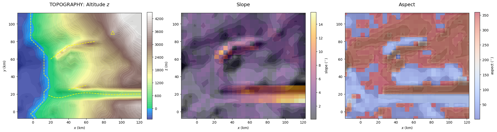
natLandLayer_downscaled = copy.deepcopy(natLandLayer)
natLandLayer_downscaled.grid = grid_downscaled
natLandLayer_downscaled.S = GenMR_utils.pooling(natLandLayer.S, f, method = 'min') # min-pooling example
GenMR_env.plot_EnvLayer_attr(natLandLayer_downscaled, 'S')
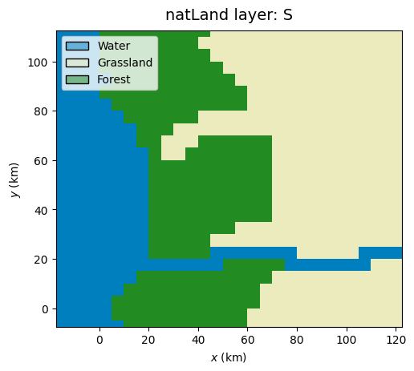
B. Underlying physical processes
B.1. Atmospheric layer: Temperature
The reference near-surface air temperature T0 is calculated using the Energy Balance Climate Model (EBCM) of North et al. (1981). The next cell shows how T0 depends on the latitude of the digital template and the month considered (see future Tutorial 3 for the implementation of seasonality in CAT modelling).
lat_low, lat_med, lat_hig = 10, 30, 45
lati = np.arange(-90,91)
moni = np.arange(12)+1
_, T0_zonal, GMST = GenMR_env.EnvLayer_atmo.calc_T0_EBCM(lati, np.nan)
print(f'Global mean surface temperature (GMST): {GMST}°C')
GMST_from_zonal = np.average(T0_zonal, weights = np.cos(np.radians(lati)))
print(f'Average zonal temperature = {GMST_from_zonal}°C (= GMST, validation value)')
T0_low, _, _ = GenMR_env.EnvLayer_atmo.calc_T0_EBCM(lat_low, moni)
T0_med, _, _ = GenMR_env.EnvLayer_atmo.calc_T0_EBCM(lat_med, moni)
T0_hig, _, _ = GenMR_env.EnvLayer_atmo.calc_T0_EBCM(lat_hig, moni)
plt.rcParams['font.size'] = '20'
fig, ax = plt.subplots(2,2, figsize = (20,14))
Tmin, Tmax = -5., 30.
ax[0,0].plot(lati, T0_zonal, color = 'black')
ax[0,0].axhline(GMST, color = 'red', linewidth = 2, label = 'GMST')
ax[0,0].set_xlabel('Latitude (°)')
ax[0,0].set_ylabel('$T_0$ (°C)')
ax[0,0].set_title('Zonal temperature', pad = 20)
ax[0,0].grid()
ax[0,0].legend()
ax[0,0].set_ylim(Tmin, Tmax)
ax[0,0].spines['right'].set_visible(False)
ax[0,0].spines['top'].set_visible(False)
ax[0,1].bar(moni, T0_med, color='grey')
ax[0,1].axhline(GMST, color = 'red', linewidth = 2)
ax[0,1].set_xticks(moni, GenMR_utils.month_labels_short, rotation=90)
ax[0,1].set_ylabel('$T_0$ (°C)')
ax[0,1].set_title(f'Seasonal temperature (lat={lat_med}°)', pad = 20)
ax[0,1].grid(axis='y', linestyle='dashed', alpha=.5)
ax[0,1].set_ylim(Tmin, Tmax)
ax[0,1].spines['right'].set_visible(False)
ax[0,1].spines['top'].set_visible(False)
ax[1,0].bar(moni, T0_low, color='grey')
ax[1,0].axhline(GMST, color = 'red', linewidth = 2)
ax[1,0].set_xticks(moni, GenMR_utils.month_labels_short, rotation=90)
ax[1,0].set_ylabel('$T_0$ (°C)')
ax[1,0].set_title(f'Seasonal temperature (lat={lat_low}°)', pad = 20)
ax[1,0].grid(axis='y', linestyle='dashed', alpha=.5)
ax[1,0].set_ylim(Tmin, Tmax)
ax[1,0].spines['right'].set_visible(False)
ax[1,0].spines['top'].set_visible(False)
ax[1,1].bar(moni, T0_hig, color='grey')
ax[1,1].axhline(GMST, color = 'red', linewidth = 2)
ax[1,1].set_xticks(moni, GenMR_utils.month_labels_short, rotation=90)
ax[1,1].set_ylabel('$T_0$ (°C)')
ax[1,1].set_title(f'Seasonal temperature (lat={lat_hig}°)', pad = 20)
ax[1,1].grid(axis='y', linestyle='dashed', alpha=.5)
ax[1,1].set_ylim(Tmin, Tmax)
ax[1,1].spines['right'].set_visible(False)
ax[1,1].spines['top'].set_visible(False)
fig.tight_layout();
Global mean surface temperature (GMST): 14.763157894736834°C
Average zonal temperature = 14.76365750942746°C (= GMST, validation value)
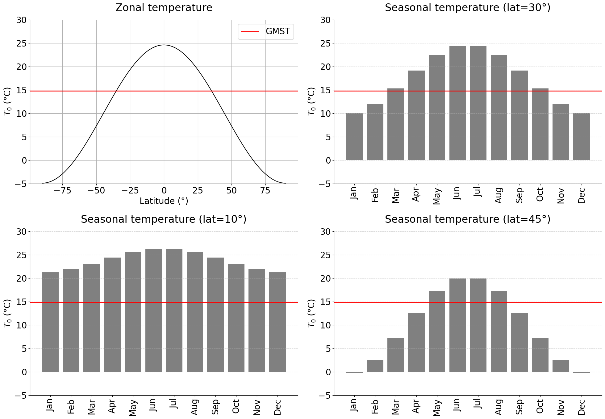
B.2. Energy CI layer: Power grid
The next code cell describes how the power grid is generated, step by step:
# 1. Generate load nodes
load_nodes, load_index = energyLayer.gen_loadnodes()
# 2. Create urban load network / 3. Connect isolated components
urbangrid, edges_new = energyLayer.gen_urbangrid(load_index)
# 4. Add generators, substations, and transmission lines
powergrid, node_names, node_coords = energyLayer.connect_generators_substations(urbangrid)
plt.rcParams['font.size'] = '16'
fig, ax = plt.subplots(2,2, figsize=(20,18))
ax[0,0].contourf(grid.xx, grid.yy, GenMR_env.ls.hillshade(topoLayer.z, vert_exag=.1), cmap='gray', alpha = .2)
ax[0,0].pcolormesh(grid.xx, grid.yy, urbLandLayer.S, cmap = GenMR_utils.col_S, vmin=-1, vmax=7, alpha = .4)
ax[0,0].scatter(load_nodes[:,0], load_nodes[:,1], color = 'black', s = 5, label = 'load node')
edges = list(urbangrid.edges())
k = 0
for i1, i2 in edges:
x = [load_nodes[i1,0], load_nodes[i2,0]]
y = [load_nodes[i1,1], load_nodes[i2,1]]
if k == 0:
ax[0,0].plot(x, y, color='blue', linewidth=.5, label = 'urban grid mesh')
else:
ax[0,0].plot(x, y, color='blue', linewidth=.5)
k += 1
k = 0
for i1, i2 in edges_new:
x = [load_nodes[i1,0], load_nodes[i2,0]]
y = [load_nodes[i1,1], load_nodes[i2,1]]
if k == 0:
ax[0,0].plot(x, y, color='red', linewidth=1, label = 'connected islands')
else:
ax[0,0].plot(x, y, color='red', linewidth=1)
k += 1
ax[0,0].set_xlabel('$x$ (km)')
ax[0,0].set_ylabel('$y$ (km)')
ax[0,0].set_title('Urban grid', pad = 20)
ax[0,0].set_aspect(1)
ax[0,0].legend(fontsize = 12)
pathLines = energyLayer.powergrid_nlines_G2S
ax[0,1].contourf(grid.xx, grid.yy, GenMR_env.ls.hillshade(topoLayer.z, vert_exag=.1), cmap='gray', alpha = .2)
ax[0,1].pcolormesh(grid.xx, grid.yy, urbLandLayer.S, cmap = GenMR_utils.col_S, vmin=-1, vmax=7, alpha = .4)
for i in range(energyPar['powergrid_redundanciesGS']):
if i == 0:
ax[0,1].plot(pathLines[f'Gdam_{i+1}'][0], pathLines[f'Gdam_{i+1}'][1], color = 'black', linewidth=2, label = 'transmission line')
else:
ax[0,1].plot(pathLines[f'Gdam_{i+1}'][0], pathLines[f'Gdam_{i+1}'][1], color = 'black', linewidth=2)
ax[0,1].plot(pathLines[f'Gth_{i+1}'][0], pathLines[f'Gth_{i+1}'][1], color = 'black', linewidth=2)
ax[0,1].plot(pathLines[f'Gwf_{i+1}'][0], pathLines[f'Gwf_{i+1}'][1], color = 'black', linewidth=2)
if i == 0:
ax[0,1].plot(pathLines[f'Gdam_{i+1}'][0][-1], pathLines[f'Gdam_{i+1}'][1][-1], 'bs', markersize=10, label = 'substation node')
else:
ax[0,1].plot(pathLines[f'Gdam_{i+1}'][0][-1], pathLines[f'Gdam_{i+1}'][1][-1], 'bs', markersize=10)
ax[0,1].plot(pathLines[f'Gth_{i+1}'][0][-1], pathLines[f'Gth_{i+1}'][1][-1], 'bs', markersize=10)
ax[0,1].plot(pathLines[f'Gwf_{i+1}'][0][-1], pathLines[f'Gwf_{i+1}'][1][-1], 'bs', markersize=10)
if i == 0:
ax[0,1].plot(pathLines[f'Gdam_{i+1}'][0][0], pathLines[f'Gdam_{i+1}'][1][0], 'r*', markersize=12, label = 'generator node')
else:
ax[0,1].plot(pathLines[f'Gdam_{i+1}'][0][0], pathLines[f'Gdam_{i+1}'][1][0], 'r*', markersize=12)
ax[0,1].plot(pathLines[f'Gth_{i+1}'][0][0], pathLines[f'Gth_{i+1}'][1][0], 'r*', markersize=12)
ax[0,1].plot(pathLines[f'Gwf_{i+1}'][0][0], pathLines[f'Gwf_{i+1}'][1][0], 'r*', markersize=12)
txt_dx, txt_dy = -20, 3
ax[0,1].text(pathLines['Gdam_1'][0][0]+txt_dx, pathLines['Gdam_1'][1][0]+txt_dy, 'hydropower dam')
ax[0,1].text(pathLines['Gth_1'][0][0]+txt_dx, pathLines['Gth_1'][1][0]+txt_dy, 'thermal plant')
ax[0,1].text(pathLines['Gwf_1'][0][0]+txt_dx, pathLines['Gwf_1'][1][0]+txt_dy, 'wind farm')
ax[0,1].set_xlabel('$x$ (km)')
ax[0,1].set_ylabel('$y$ (km)')
ax[0,1].set_title('Generator-substation connection', pad = 20)
ax[0,1].set_aspect(1)
ax[0,1].legend(fontsize = 12)
L_nodes = [i for i, name in node_names.items() if name.startswith('L')]
S_nodes = [i for i, name in node_names.items() if name.startswith('S')]
G_nodes = [i for i, name in node_names.items() if name.startswith('G')]
node_coords = np.array(node_coords)
L_coords = node_coords[L_nodes]
S_coords = node_coords[S_nodes]
G_coords = node_coords[G_nodes]
edges_all = list(powergrid.edges())
ax[1,0].contourf(grid.xx, grid.yy, GenMR_env.ls.hillshade(topoLayer.z, vert_exag=.1), cmap='gray', alpha = .1)
ax[1,0].scatter(L_coords[:,0], L_coords[:,1], color='black', s=10, label='Load')
ax[1,0].plot(S_coords[:,0], S_coords[:,1], 'bs', markersize=10, label='Substation')
ax[1,0].plot(G_coords[:,0], G_coords[:,1], 'r*', markersize=12, label='Generator')
for i,j in edges_all:
x = [node_coords[i,0], node_coords[j,0]]
y = [node_coords[i,1], node_coords[j,1]]
ax[1,0].plot(x, y, color='black', linewidth=0.5)
ax[1,0].set_xlabel('$x$ (km)')
ax[1,0].set_ylabel('$y$ (km)')
ax[1,0].set_title('Power grid', pad = 20)
ax[1,0].set_aspect(1)
ax[1,1].axis('off');
/opt/homebrew/lib/python3.11/site-packages/IPython/core/events.py:82: UserWarning: Creating legend with loc="best" can be slow with large amounts of data.
func(*args, **kwargs)
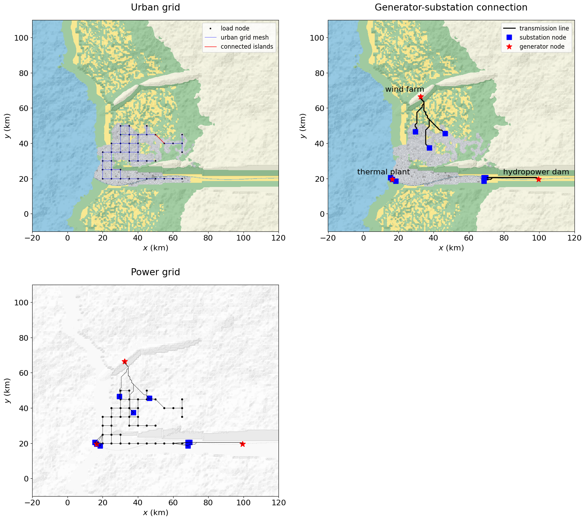
B.3. Socioeconomic layer: Updated power grid flow
Local power demand (derived from the socio-economic system) is mapped onto the power grid, after which power is redistributed to meet this demand. The following code cell illustrates how load-node sectors are defined, highlights the imbalance between the initial homogeneous supply and the heterogeneous urban demand, and shows how the resulting power flows resolve these imbalances.
xmin, xmax, ymin, ymax = 15,70, 15,55
plt.rcParams['font.size'] = '16'
fig, ax = plt.subplots(3,2, figsize=(20,22))
## POWER LOAD SECTORS ##
n_colors = 10
color_indices = np.array(socioecoLayer.load_ID) % n_colors
color_indices[np.isnan(socioecoLayer.load_ID)] = np.nan
ax[0,0].contourf(grid.xx, grid.yy, GenMR_env.ls.hillshade(topoLayer.z, vert_exag=.1), cmap='gray')
ax[0,0].pcolormesh(grid.xx, grid.yy, color_indices, cmap='tab10', alpha = .5)
load_coords = node_coords[indL]
ax[0,0].scatter(load_coords[:,0], load_coords[:,1], color = 'black', s = 10)
ax[0,0].set_xlabel('$x$ (km)')
ax[0,0].set_ylabel('$y$ (km)')
ax[0,0].set_title('Power supply ID', pad = 10)
ax[0,0].set_xlim(xmin, xmax)
ax[0,0].set_ylim(ymin, ymax)
ax[0,0].set_aspect(1)
ax[0,1].axis('off')
## INITIAL SUPPLY VS DEMAND ##
diff_day = socioecoLayer.node_supply[indL] - socioecoLayer.node_demand_day
diff_night = socioecoLayer.node_supply[indL] - socioecoLayer.node_demand_night
# from node to mesh for plotting
mask = ~np.isnan(socioecoLayer.load_ID)
node_ids = socioecoLayer.load_ID[mask].astype(int)
nx, ny = grid.xx.shape
diff_day_array = np.full((nx, ny), np.nan)
diff_night_array = np.full((nx, ny), np.nan)
diff_day_array[mask] = np.array(diff_day)[node_ids]
diff_night_array[mask] = np.array(diff_night)[node_ids]
vmax = np.nanmax(np.abs(diff_day_array))
ax[1,0].contourf(grid.xx, grid.yy, GenMR_env.ls.hillshade(topoLayer.z, vert_exag=.1), cmap='gray')
ax[1,0].pcolormesh(grid.xx, grid.yy, diff_day_array, cmap='PiYG', alpha = .5, vmin=-vmax, vmax=vmax)
for i, (x, y) in enumerate(load_coords):
val = diff_day[i]
ax[1,0].text(x, y, f"{val:.1f}", color='black', fontsize=8, ha='center', va='center', weight='bold')
ax[1,0].set_xlabel('$x$ (km)')
ax[1,0].set_ylabel('$y$ (km)')
ax[1,0].set_title('Load demand distribution (day)', pad = 10)
ax[1,0].set_xlim(xmin, xmax)
ax[1,0].set_ylim(ymin, ymax)
ax[1,0].set_aspect(1)
vmax = np.nanmax(np.abs(diff_night_array))
ax[1,1].contourf(grid.xx, grid.yy, GenMR_env.ls.hillshade(topoLayer.z, vert_exag=.1), cmap='gray')
ax[1,1].pcolormesh(grid.xx, grid.yy, diff_night_array, cmap='PiYG', alpha = .5, vmin=-vmax, vmax=vmax)
for i, (x, y) in enumerate(load_coords):
val = diff_night[i]
ax[1,1].text(x, y, f"{val:.1f}", color='black', fontsize=8, ha='center', va='center', weight='bold')
ax[1,1].set_xlabel('$x$ (km)')
ax[1,1].set_ylabel('$y$ (km)')
ax[1,1].set_title('Load demand distribution (night)', pad = 10)
ax[1,1].set_xlim(xmin, xmax)
ax[1,1].set_ylim(ymin, ymax)
ax[1,1].set_aspect(1)
## POWER FLOW ##
diff_day_new = energyLayer.node_served_day[indL] - socioecoLayer.node_demand_day
diff_night_new = energyLayer.node_served_night[indL] - socioecoLayer.node_demand_night
# from node to mesh for plotting
mask = ~np.isnan(socioecoLayer.load_ID)
node_ids = socioecoLayer.load_ID[mask].astype(int)
nx, ny = grid.xx.shape
diff_day_new_array = np.full((nx, ny), np.nan)
diff_night_new_array = np.full((nx, ny), np.nan)
diff_day_new_array[mask] = np.array(diff_day_new)[node_ids]
diff_night_new_array[mask] = np.array(diff_night_new)[node_ids]
edges = list(powergrid.edges())
ax[2,0].contourf(grid.xx, grid.yy, GenMR_env.ls.hillshade(topoLayer.z, vert_exag=.1), cmap='gray')
ax[2,0].pcolormesh(grid.xx, grid.yy, diff_day_new_array, cmap='PiYG', alpha=.5, vmin=-vmax, vmax=vmax)
flow_vals = np.array([energyLayer.flows_day[(i, j)] for i, j in edges])
max_flow = np.max(np.abs(flow_vals)) + 1e-6
for (i, j), f in zip(edges, flow_vals):
x1, y1 = node_coords[i]
x2, y2 = node_coords[j]
# Flip arrow if flow is negative
if f < 0:
x1, y1, x2, y2 = x2, y2, x1, y1
f = -f
lw = .5 + 4 * abs(f) / max_flow
ax[2,0].arrow(x1, y1, x2 - x1, y2 - y1, head_width=.8, length_includes_head=True,
linewidth=lw, color='red', alpha=.7)
ax[2,0].scatter(node_coords[:, 0], node_coords[:, 1], c = energyLayer.theta_day, cmap='coolwarm', s=20, edgecolor='k')
ax[2,0].set_xlabel('$x$ (km)')
ax[2,0].set_ylabel('$y$ (km)')
ax[2,0].set_title('Power balance residual (day)', pad = 10)
ax[2,0].set_xlim(xmin, xmax)
ax[2,0].set_ylim(ymin, ymax)
ax[2,0].set_aspect(1)
# NIGHT
ax[2,1].contourf(grid.xx, grid.yy, GenMR_env.ls.hillshade(topoLayer.z, vert_exag=.1), cmap='gray')
ax[2,1].pcolormesh(grid.xx, grid.yy, diff_night_new_array, cmap='PiYG', alpha=.5, vmin=-vmax, vmax=vmax)
flow_vals = np.array([energyLayer.flows_night[(i, j)] for i, j in edges])
max_flow = np.max(np.abs(flow_vals)) + 1e-6
for (i, j), f in zip(edges, flow_vals):
x1, y1 = node_coords[i]
x2, y2 = node_coords[j]
# Flip arrow if flow is negative
if f < 0:
x1, y1, x2, y2 = x2, y2, x1, y1
f = -f
lw = .5 + 4 * abs(f) / max_flow
ax[2,1].arrow(x1, y1, x2 - x1, y2 - y1, head_width = .8, length_includes_head=True,
linewidth=lw, color='red', alpha=.7)
ax[2,1].scatter(node_coords[:, 0], node_coords[:, 1], c = energyLayer.theta_night, cmap='coolwarm', s=20, edgecolor='k')
ax[2,1].set_xlabel('$x$ (km)')
ax[2,1].set_ylabel('$y$ (km)')
ax[2,1].set_title('Power balance residual (night)', pad = 10)
ax[2,1].set_xlim(xmin, xmax)
ax[2,1].set_ylim(ymin, ymax)
ax[2,1].set_aspect(1);
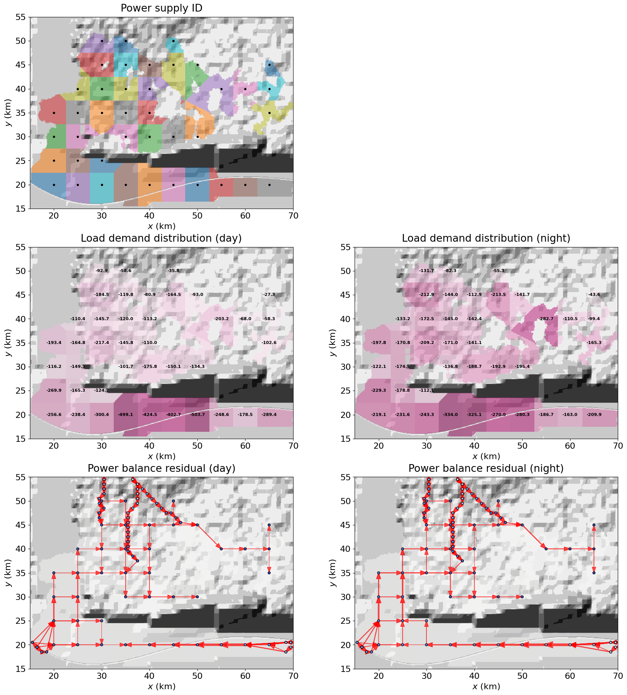
# verify that final load power supply = initial load power demand
print('Daytime supply-demand (MW):',
np.round(energyLayer.node_served_day[indL]- socioecoLayer.node_demand_day))
print('Nighttime supply-demand (MW):',
np.round(energyLayer.node_served_night[indL]- socioecoLayer.node_demand_night))
Daytime supply-demand (MW): [ 0. -0. 0. -0. -0. 0. -0. 0. -0. -0. 0. -0. -0. 0. 0. 0. 0. -0.
-0. 0. -0. -0. -0. 0. -0. -0. 0. 0. -0. 0. -0. -0. 0. 0. -0. -0.
-0. -0. -0. 0. -0.]
Nighttime supply-demand (MW): [ 0. -0. 0. -0. 0. 0. 0. 0. -0. -0. 0. -0. -0. 0. 0. -0. -0. -0.
0. 0. 0. -0. 0. 0. -0. 0. 0. -0. -0. 0. 0. 0. 0. -0. -0. 0.
0. -0. -0. -0. 0.]